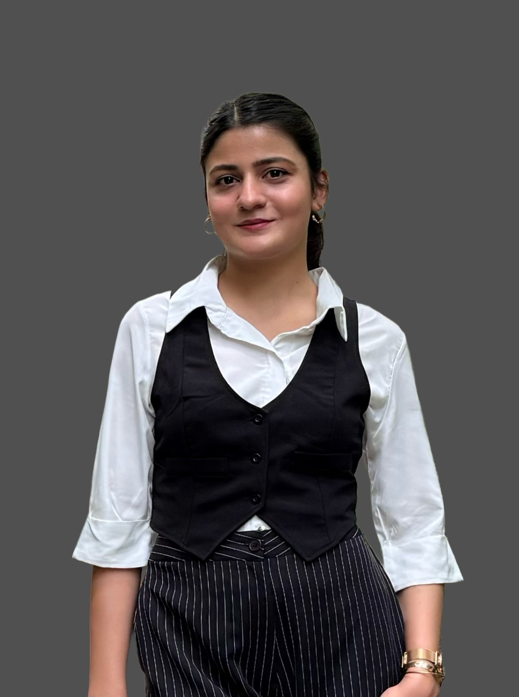

01AI / COMPUTER VISION
Aaj Kya Pehnu 3.0
Production-grade Fashion Vision AI for automatic garment understanding and intelligent wardrobe generation.
VISION
→
WARDROBE
→
WARDROBE
IMAGE → ATTRIBUTES → EMBEDDING
I’m Anusha Khan — an AI/ML Engineer and Software Engineer building intelligent applications, backend systems, and research-driven products.

Projects where AI, software engineering, and product thinking meet.
Production-grade Fashion Vision AI for automatic garment understanding and intelligent wardrobe generation.
A multi-seller e-commerce platform built around buyer–seller price negotiation through secure REST APIs.
A backend-focused finance application combining natural-language expense logging, budgets, goals, emotion tagging, analytics, and cloud deployment.
I’m interested in the space between research and real software.
My work spans machine learning, computer vision, backend engineering, and deployed applications. I enjoy taking a problem from architecture and experimentation through to a system people can actually use.
Alongside engineering, I’m building research experience in explainable AI for healthcare and have taken on technical leadership roles in my university community.
Designed and optimized backend services using Java and Python, built RESTful APIs, improved MongoDB indexing, and introduced Redis caching. Internship work reports a 50% reduction in average response time from indexing optimization.
Coordinate between students and recruiting organizations while supporting peers with technical readiness and placement preparation.
Mentor contributors on backend projects and Git workflows, lead technical discussions, and promote collaborative development.
Building toward AI systems that are not only accurate, but interpretable.
Developing a deep learning-based chest X-ray system using TensorFlow/Keras and EfficientNetB0 to detect and classify Tuberculosis against Healthy and Non-TB conditions, alongside XAI techniques to interpret model predictions.
Python · Java · C++ · JavaScript · SQL
PyTorch · TensorFlow · Computer Vision · YOLO · OpenCV · Deep Learning
RAG · LLMs · AI Agents · LangChain · LangGraph
FastAPI · Flask · Node.js · Express.js · REST APIs
PostgreSQL · MySQL · MongoDB · Redis
Docker · Git · AWS EC2 · AWS S3 · Postman
Built a Smart Community Health Monitoring and Early Warning System for Water-Borne Diseases in Rural Northeast India.
Optimized MongoDB indexing during internship work, with a reported 50% reduction in average response time.
Student Placement Representative and Technical Lead, mentoring peers and contributors.
I'm open to AI/ML and software engineering opportunities, technical collaborations, and interesting problems.
anushakhan2709@gmail.com ↗